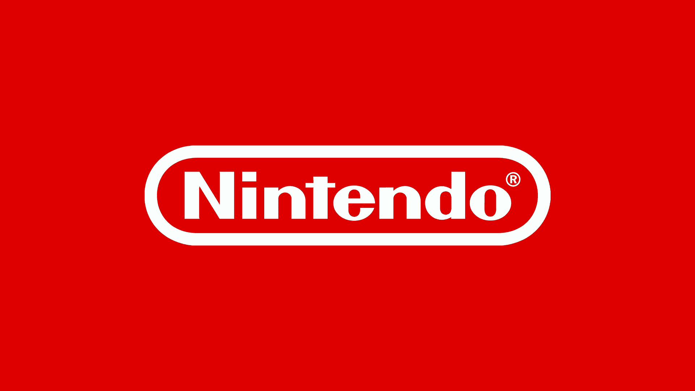
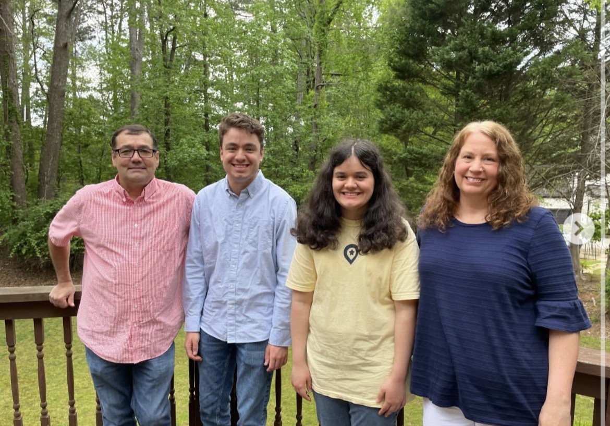

Hi everyone, my name is Jacob, and I am currently 21 years old, who is a student majoring in Information Technology at Kennesaw State University. I have always been into computers and technology since a very young age. I was about 5 years old when I got my first Nintendo Console, the Wii. I first heard about Survivor when I was about 11 years old. My sister told me what it was about, and I just had to check it out. I ended up falling in love with the show, and have been a superfan ever since. I have even applied to be on the show, so who knows, I could be on your TV screens in the near future.
Some of my hobbies include playing video games, as well as hanging out with my friends. I have always loved video games, and have almost every Nintendo Console. A few gaming companies I am most familiar with are Sega, Nintendo, Epic Games, and Namco. Some of my favorite video games include Mario Kart, Mario Party, and Super Smash Bros. I love hanging out with my friends that I have met during my time at KSU, as well as my friends who I have known since middle school and elementary school. Two of my friends specifically have been great role models for me, and I am extremely grateful for that. I would not be the person I am without them. I am always down for going out and getting a few cold ones.

I graduated from West Forsyth High School in 2023, where I graduated with honors, and finished with a final GPA of 3.92. I was a straight A student in high school for the most part, besides a few classes. I did not let that stop me from working hard and finishing strong. I am super grateful for my mom and dad, as they have supported me throughout everything I have been through. They have always told me that as long as I try my best in everything I do, that is all that matters. I am also grateful for my sister Hannah, because without her, growing up as a single child would have been pretty hard.

The image above is a picture of my wonderful family.
Here is a little fun Survivor simulator I added.
Total Votes: 0